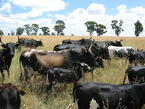

Livestock
Livestock and fisheries make vital contributions to meeting the food and nutrition needs of ACP countries. In these countries, the livestock sector ranges from small-scale producers of live animals to large-scale commercial enterprises on the one hand, and simple slaughter poles to sophisticated abattoirs with refrigeration and chilling facilities at the other end of the continuum. The dossier provides a wealth of selected background information on the livestock sector that is essential for supporting ACP policy making for sustainable development.
{kind=link}
The poultry value chain in Africa, Caribbean and the Pacific (ACP) countries involves both large-scale integrated enterprises and small-scale production systems. The former have benefited from capital investments, access to information and scientific research, whereas the latter remain isolated despite their significance. Family poultry comprises approximately 80% of the world's total poultry stock and plays a key role in many households in ACP countries for food and nutrition security, livelihoods and conservation of indigenous breeds. An analysis of the family poultry value chain, including its poor productivity and low financial and technical inputs, shows that it contrasts markedly with conditions in large-scale commercial poultry enterprises. Governments and researchers would be well advised to thoroughly review the family poultry value chains to identify priorities for science and innovation that can contribute to improved efficiency for the provision of eggs, live birds, fresh-chilled, frozen and other value-added poultry products. This summary is provided by CABI and CTA, July 2012.
Read more...
{kind=link}
Read more...

There is need to improve the reproductive potential of dairy cattle owned by small-holder farmers as well as enhance earning potential. According to Paterson, the challenge for improving small-holder dairy production under communal systems is clear; introduce dairy genetics and supply the quantity and quality of feed to improve reproductive and yield potential. 03/02/2014
Read more...
Read more...
LWP takes an interdisciplinary agro-ecosystems approach to achieve more effective, sustainable and productive use of agricultural water for animal production. It calls for better feed sourcing and management, adoption of best-bet animal production technology, and improved water conservation. LWP is a scale-dependent concept: the elements of the hydrological cycle are studied within a specific spatiotemporal window. It represents the ratio of the total value of goods and services derived from domestic animals to the amount of water depleted as a cost of livestock-keeping. 27/01/2014
Read more...
Read more...
A vast study by Mario Herrero and colleagues at the International Livestock Research Institute (ILRI), the Commonwealth Scientific and Industrial Research Organisation (CSIRO) and the International Institute for Applied Systems Analysis (IIASA), shows that animals in many parts of the developing world require far more food to produce a kilo of protein than animals in wealthy countries. It also shows that pork and poultry are being produced far more efficiently than milk and beef, and greenhouse gas emissions vary widely depending on the animal involved and the quality of its diet. The research is a comprehensive assessment assembled of what cows, sheep, pigs, poultry and other farm animals are eating in different parts of the world; how efficiently they convert that feed into milk, eggs and meat; and the amount of greenhouse gases they produce. The paper offers the most detailed portrait to date of ‘livestock ecosystems’ in different parts of the world and should provide a new foundation for addressing the sustainable development of livestock. http://www.pnas.org/content/early/2013/12/13/1321844111.full.pdfhttp://paepard.blogspot.nl/2014/01/livestock-sustainability-through.html(PNAS via PAEPARD, 16/12/2013) 27/01/2014
Read more...
Read more...
One West-African dwarf cattle breed, the Baoulé, seems less affected by trypanosomosis than others. The scientists behind the discovery have developed a method that can identify the parasites responsible for trypanosomosis and can even detect three different forms of the parasite in a single step. The information is extremely valuable to veterinarians and farmers as each type of trypanosome causes a slightly different disease progression and requires a different type of treatment. The researchers used their new method to examine samples of blood from apparently healthy Baoulé cattle, Indian Zebu cattle and crosses between the two breeds. It seems that the Baoulé's immune system can tolerate higher levels of the blood parasite. When they are infected, Baoulé cattle develop fever and lose weight but do not necessarily die. http://www.sciencedaily.com/releases/2013/09/130927092346.htm (ScienceDaily, 27/09/2013) 05/11/2013
Read more...
Read more...
In June 2013 the OECD organised the conference ‘Livestock disease policies: Building bridges between animal science and economics’. This conference focused on how economics, working together with animal sciences, can contribute to a comprehensive and efficient management of livestock disease risks. The four key themes covered were: 1) how to generate a constructive dialogue to reduce and manage uncertainties; 2) the economic assessment of the impacts of animal diseases and control measures; 3) the impact of policy on economic incentives for animal keepers and the food system; and 4) policymaking and communication in an uncertain world. One broad recommendation states that economists, epidemiologists and policy makers need to communicate clearly with each other to ensure better policies for managing livestock diseases. All presentations and proceedings are available online. http://www.lcirah.ac.uk/node/139http://www.oecd.org/tad/agricultural-policies/livestock-diseases-2013.htm(LCIRAH, 12/2013) 27/01/2014
Read more...
Read more...
E-mail Newsletter
Interact with us
Members
- Is the innovation systems approach the answer to inclusive development?
- CTA Top 20 Innovations that Benefit Smallholder Farmers
- Enhancing private sector engagement in agricultural research and development in eastern Africa
- Intellectual property rights in plant breeding and the impact on agricultural innovation
- The ethics of animal production and sustainability